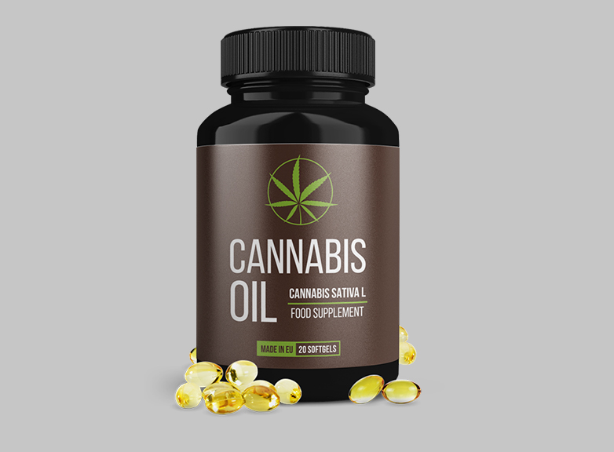

Šveicarijos mokslininkų atradimas visiškai pakeitė požiūrį į hipertenzijos gydymą. Dabar jūs galite atsikratyti staigaus kraujospūdžio padidėjimo tik per 28 dienas.
Hipertenzija yra pavojingiausia liga pasaulyje. Vien Europoje kasmet nuo jos ir jos padarinių miršta daugiau kaip 5 milijonai žmonių! Niekas nėra apsaugotas nuo šios patologijos atsiradimo, ji pasitaiko 98% žmonių, vyresnių nei 50 metų - kažkam anksčiau, kažkam vėliau.
Šiandien Šveicarijos mokslininkams pavyko nustatyti TIKRĄSIAS hipertenzijos priežastis ir pasiūlyti unikalų būdą joms pašalinti. Puikiausias šios naujienos dalykas yra tai, kad jums nereikia vartoti brangių cheminių preparatų, kad atsikratytumėte hipertenzijos priežasčių! Hipertenzija gali būti išgydoma tokiu būdu, kaip ji buvo gydoma senovėje. Dabar mokslininkai vėl pradėjo jį naudoti. Ir tai padarė tikrą perversmą gydant ne tik hipertenziją, bet ir kitas širdies ir kraujagyslių ligas.
Tokiu būdu galima išgydyti tokias ligas kaip:
- Aterosklerozė
- Išeminė širdies liga
- Trombozė
- Tromboflebitas
- Aritmija ir krūtinės angina
- Širdies ūžesys
- Hematopoezė (anemija)
- Venų varikozė
Susitikime su žurnalistais Šveicarijos mokslininkų atradimą pakomentavo garsus kardiologas, aukščiausios kategorijos gydytojas, profesorius Mykolas Prascevičius.

Žurnalistas: Ar labai pavojingas aukštas kraujospūdis?
Mykolas Prascevičius: Žinoma, aukštas kraujospūdis yra pavojinga patologija. Širdis greitai susidėvi, indai tampa trapūs, todėl padidėja jų plyšimo rizika. Smegenų kraujagyslių plyšimas - insultas, širdies - infarktas. Abi ligos yra mirtinai pavojingos.
Be to, aukštas kraujospūdis yra pavojingas, nes kraujagyslėje esantis kraujo krešulys gali atitrūkti ir užkimšti kraujotaką. Tai taip pat sukelia mirtinų komplikacijų.
Dėl aukštas kraujo spaudimo greitai nusidėvi visas organizmas. Štai kodėl hipertenziją dažnai lydi tokios ligos kaip:
- Aklumas
- Širdies nepakankamumas
- Inkstų nepakankamumas
- Aterosklerozė
- Sąnarių ir stuburo ligos
- Impotencija
- Smegenų išemija
Žinoma, jums reikia atsikratyti hipertenzijos. Ir tai turėtų būti padaryta kuo greičiau.
Žurnalistas: Kodėl vaistinėse parduodami vaistai negali išgydyti hipertenzijos?
Mykolas Prascevičius: Daugelis vaistinių vaistų yra hipotenziniai, jų poveikiai yra skirti pašalinti patologijos simptomus - didžiausią kraujospūdį. Jie turi tik trumpalaikį poveikį. Kai tik jis pasibaigia, spaudimas vėl kyla. Štai kodėl antihipertenzinius vaistus reikia vartoti visą gyvenimą.
Be to, greitai vystosi tolerancija šiems vaistams, todėl juos reikia pakeisti kitais. Antihipertenzinių vaistų funkcija yra apsaugoti žmogų nuo padidėjusio kraujospūdžio, tačiau jie patys negydo hipertenzijos. Jei norite visiškai atsikratyti ligos, turite naudoti kitas priemones.
Žurnalisto klausimas: koks yra Šveicarijos mokslininkų atradimas gydant hipertenziją?
Mykolas Prascevičius: Šveicarijos širdies ir kraujagyslių instituto mokslininkai nustatė, kad hipertenzija yra kraujagyslių užteršimo cholesteroliu pasekmė. Tai šiek tiek primena riebalus šaltame vandenyje, gyvenimo procese cholesterolis nusėda ant vidinių kraujagyslių sienelių vis storesniu sluoksniu. Dėl to sumažėja naudingoji prošvaisa kraujagyslėse. Norint užtikrinti pakankamą vidaus organų aprūpinimą krauju, širdis turi padidinti kraujospūdį. Taip vystosi su amžiumi susijusi hipertenzija.

Šveicarijos mokslininkai nustatė, kad cholesterolio sankaupas gali sunaikinti polinesočiosios riebalų rūgštys - Omega-3, Omega-6, Omega-9. Buvo atlikta daugiau nei 120 didelio masto eksperimentų, leidusių nustatyti optimalų šių rūgščių santykį efektyviajai kovai su cholesteroliu. Šis santykis yra 1: 3: 10. Už šį atradimą ir darbą 3 Šveicarijos širdies ir kraujagyslių instituto darbuotojai buvo nominuoti Nobelio medicinos premijai.
Tai labai svarbus atradimas, nes jis leidžia GYDYTI hipertenziją. Nemažinti kraujospūdžio, noriu tai pabrėžti, o būtent GYDYTI hipertenziją. Jau pavartojus mėnesį Omega prisotintu riebiųjų rūgščių santykiu 1: 3: 10, spaudimas visiškai nustos kilęs. Žmogus atsisakys antihipertenzinių vaistų vartojimo, sustiprins savo sveikatą ir pratęs savo gyvenimą.
Žurnalisto klausimas: Prašau pasakyti, kokius vaistus reikia vartoti norint išgydyti hipertenziją?
Mykolas Prascevičius: Kaip jau minėjau, kraujagyslėms valyti ir hipertenzijai gydyti reikalingos Omega nesočiosios riebalų rūgštys santykiu 1: 3: 10. Tokiu santykiu gamtoje jie randami tik viename augale - KANAPIŲ SĖKLOSE. Mokslininkams pavyko iš sėklų gauti labai koncentruoto aliejaus - išvardytos rūgštys jame yra tinkamu santykiu ir pakankamu kiekiu gydymui.
Mokslininkai pasiūlė savanoriams vartoti labai koncentruotą kanapių aliejų, kurį jie išgavo. Rezultatai visus nustebino - galime sakyti, kad žmonija rado vaistą nuo hipertenzijos!
Noriu parodyti jums Šveicarijos tyrimų rezultatus. Iš viso juose dalyvavo 2182 savanoriai. Jie visi sirgo hipertenzija ir vartojo kanapių aliejų 28 dienas.
Tyrimų rezultatai
- Kraujagyslės buvo visiškai išvalytos nuo cholesterolio ir kitų teršalų - 96% tirtų
- Blogojo cholesterolio lygis kraujyje sumažėjo - 98% tirtų
- Kraujospūdis stabilizavosi iki normalaus - 94% tirtų
- Galvos skausmai išnyko - 99% tirtų
- Pagerėjo regėjimas - 74% tirtų
Žurnalisto klausimas: Kada Europos vaistinėse bus galima įsigyti labai koncentruoto CBD aliejaus kapsulėse?
Mykolas Prascevičius: Greičiausiai „CANNABIS OIL“ negreitai pasirodys vaistinių tinkluose. Faktas yra tas, kad parduodant vaistinėse reikia milžiniškų preparatų kiekių, o kanapių aliejus šiuo metu gaminamas ribotais kiekiais dėl kanapių sėklų trūkumo Europoje. Remiantis pačiomis optimistiškiausiomis prognozėmis, „CANNABIS OIL“ vaistinėse nepasirodys iki 2022 m. Šis laikas reikalingas organizuojant žaliavų pirkimą Azijoje ar kanapių sodinimą Europoje.
Dabar (ir, manau, tai truks dar kelerius metus) CANNABIS OIL galima užsisakyti tik oficialioje gamintojo svetainėje.
Dėl kainos... Šiuo metu ji yra minimali, nes labai koncentruotas kanapių aliejus parduodamas iš gamintojo, apeinant tarpininkus. Todėl šis hipertenzijos gydymo metodas yra prieinamas visiems. Pats aliejus gali būti geriamas net be gydytojo recepto.
Vienintelis dalykas, kurį verta atsiminti, yra tai, kad kanapių aliejus kapsulėse parduodamas ribotais kiekiais, o paraiškų užsakymų skaičius kasdien auga geometrine progresija, nes vis daugiau vyrų sužino apie jo nuostabias savybes. Todėl visiems rekomenduočiau palikti paraišką aliejui gauti kuo anksčiau, kol jis vis dar prieinamas.
CANNABIS OIL
Eikite į oficialią svetainę ir užsisakykite CANNABIS OILRekomenduoja Pasaulio sveikatos organizacija

Komentarai
Natalija Rendelytė
Ačiū. Aš užsisakiau kanapių aliejaus. Pradėsiu gydytis. Kraujospūdis dažnai padidėja.
Eugenija Galkontaitė
Irgi užsisakiau
Saulius Čepas
O aš esu iš tų, kurie jau spėjo išbandyti. Turėjau hipertenziją. Buvo ir pražuvo! Dabar jaučiuosi visiškai sveikas. Kraujospūdis visai nepakyla.
Eligija Palikšaitė
Ačiū jums už 'Cannabis oil' !! Mano spaudimas šokinėjo, maniau, kad numirsiu. Įprastinės tabletės nepadėjo. Tada pamačiau šį straipsnį ir užsisakiau aliejaus. Aš vartoju tik savaitę, o spaudimas jau normalizavosi.
Milena Garlienė
Man 50 metų. CANNABIS OIL pabandžiau vartoti dar praėjusiais metais. Jis mane irgi išgelbėjo. Spaudimas nustojo kilti, tačiau dabar aš nuolat užsiimu kūno kultūra ir stengiuosi valgyti teisingiau! Visiems, kurie dar nebandė, rekomenduoju šį aliejų.
Jonas Damauskas
Perskaičiau išsamią informaciją apie CBD OIL oficialioje svetainėje. Įspūdinga!
Danutė Kirkienė
Sveiki visi. Dabar aš lankiausi šio kardiologijos instituto svetainėje, liko tikrai nedaug pakuočių! Matyt, turime daug sergančių hipertenzija!
Kazys Lumbė
Hipertenzija yra tikrai baisi liga. Kas mane labiausiai vargino, tai nuolatinis spengimas ausyse. Tai tiesiog košmaras. Man nuolat skaudėjo galvą, kartais spaudimas tiesiog „paguldydavo“. Kolegos žvairuodavo į mane. Taip ir mieguistumas kankino. Kanapių kapsulės mane išgelbėjo.
Sigitas Bielskis
Kanapių aliejus yra puiki priemonė nuo padidėjusio kraujospūdžio. Gydžiausi su juo. Kraujospūdis nustojo didėti jau po 5 dienų nuo vartojimo pradžios. Nustojau gerti tabletes. Jaučiuosi puikiai.
Sofija Railienė
Laikraštyje skaičiau apie kanapių aliejų hipertenzijai gydyti. Taip pat rašė, kad tai isgijimo atdimas . Reikia mėginti užsakyti
Saulius Simanauskas
O aš jau vakar gavau iš kurjerio. Spėjau laiku užsisakyti
Henrikas Ilginis
Pusę gyvenimo turėjau padidintą kraujospūdį. Gydytojo draugo patarimu pradėjau vartoti labai koncentruotą kanapių aliejų. Dėl to jau keletą mėnesių spaudimas 110/70, 120/80 ribose. Kodėl šis augalas anksčiau nebuvo naudojamas širdies ir kraujagyslių ligoms gydyti. Kiek žmonių jau mirė
Kristina Briaunaitė
Ačiū. Įdomu. Palikau paraišką. Tikiuosi, kad preparato dar liko. Be jo aš nežinau, kuo ir gydyti.
Artūras Draneika
Ačiū!!!